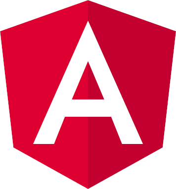
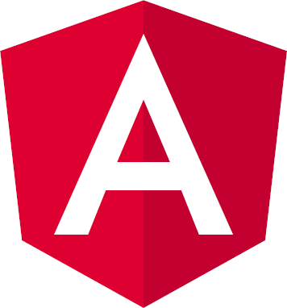

HTML
HTML5 (англ. HyperText Markip language, version5) - язык для структурирования и представления содержимого всемирной паутины. Это пятая весрия HTML. Хотя старндарт был завершен (рекомендованная версия к использованию) только в 2014 году. Читать далее
Bootstrap
BOOTSTRAP (так же известен как Twitter Bootstrap) - свободный набор инструментов для создания сайтов и веб-приложений. Включает в себя HTML и CSS шаблоны оформления для типографики, веб-форм, кнопок, меток, блоков навигации и прочих компонентов веб-интерфейса, включая JavaScript-расширения. Читать далее


 
